普通的 attention 需要显示保存所有的历史 KV，然后再让query去查询所有的历史 token，但是token数越多，attention的成本也就越高。TTT则是换了一个角度，它不用显式保存所有的 历史KV，而是让这些历史 token 取更新一个 fast-weight，更新完以后，新的 query 就不用 attend 全部历史 KV，而是读取这个 fast weight memory就可以了。==其实就是把 KV cache 压缩到一个固定大小的 neural memory 中。
- self attention: 每个token能显式访问历史，但是复杂度增长太快了。
- RNN / SSM / Mamba: 用固定长度的 hidden state 来存储记忆，是达到了线性复杂度的水平，但是序列太长了它的表达能力还是会下降，毕竟固定长度还是有限
- TTT: 把 memory 看作一个小模型的参数，在测试的时候快速学习并更新参数来迭代更新记忆，把 记忆检索 转成 online learning。
1. 成功应用TTT的条件
自监督的子=任务要和主要任务对齐；
- 对于 streaming reconstruction 来讲，一个好的自监督任务应该是让模型学习：跨帧稳定的、可复用的几何相关信息；
fast weights 的容量要大，MLP 的最好，后期会有 mem 和 IO 的顾虑；
weights 更新规则要稳定；
- \(η_t\) 怎么设；
- 更新哪些 token；
- chunk 设置多大；
- SGD？Adam？Muon？
效率要高，minibatch 设置太小就不行，有 LaCT；
- minibacth 小看起来是越频繁越更新-> 越在线，但是这样的话，这个 小模型就要不断进行 forward loss backward，而且每一次并行计算的很少，多了很多重复运算，而且 flops utilization 根本跑不起来；
- 大 chunk 是有可能损失在线性的，所以 chunk 内用 window attention 处理，chunk 之间再用 TTT 的 fast weights 传递长期记忆。
- key frame chunk or sliding window chunk update；
- 对真正无限长的 streaming 需要处理跨 chunk 遗忘和 memory 污染的问题；
2. TTT layer
不是整个模型，是模型的一个中间层，作用类似于 attention，输入token输出更新后的 token representation。把 attention layer 替换成一个 test time training layer.==
- 流程： 输入进来的 token 序列经过三个矩阵分别投影到: \(q_t, k_t, v_t\) ,用 \(f_{W_{t-1}}(k_t)\) 和 \(v_t\) 做比较与损失（\(L_{TTT} (W;x_t)=\frac{1}{2}||Wk_t - x_t||\),再对 W 求梯度）来更新 fast weights（ \(W_t = W_{t-1} - η(W_{t-1}k_t-v_t)k_t^T\) ），再用 \(q_t\) 查询更新了的model: \(y_t = f_{W_{t}}(q_t)\) 。
- 得到好的 \(v_t\) 的能力是 outer loop 决定的。
- TTT 其实就是用一个函数来充当 hidden state 的角色；
- TTT-linear: \(f_W(z) = W(z)\) ；
- TTT-MLP: \(f_W(z) = W_2 \sigma(W_1 z)\), 更新成了真的反向传播：\(W_t=W_{t−1}−η∇_W\frac{1}{2}||f_W(k_t)−v_t||^2\) ,把 hidden state 的表达能力从矩阵提升到了小神经网络；
TTT layer 是一种特殊 RNN：hidden state 是模型参数，state update 是梯度下降。
TTT-linear 在 streaming reconstruction 中就相当于一个线性的 memory map，快/好实现，但是只有线性对应关系，对于复杂遮挡或者非刚体变化不够强。
TTT-MLP 在 streaming reconstruction 中相当于一个 scene adapter，但是要注意更新稳定性和计算效率的平衡
3. LaCT
window attention + large chunk ttt layer + feedforward layer 相当于是内部 self attention，chunk 之间 TTT 优化器：Muon。
不直接用原始梯度，对矩阵梯度做谱归一化式处理，让 update 方向更稳定。控制 token/chunk 的相对重要性，不被梯度绝对尺度严重干扰。
提出 update 和 apply 可解耦，不同的顺序可以表示不同的因果结构，需要根据不同任务来确定。
先 update 后 apply：chunk 内非 causal，chunk 间 chunk causal；（非严格在线，chunk-wise causal）
- NVS or offline reconstruction 不需要严格 causal，所以可以这样做；
- 要求不严格，可以接受低延迟的 短窗口 online streaming reconstruction。会引入窗口内的非因果性。（可以加 local temporal attention）
先 apply 后 update：均 causal；（严格在线）
- 严格 online 的 streaming reconstruction 要选择；
启发
- frame chunk, 大量 vision tokens 一次性进行 memory update；
- （window attention + local matching）+ global fast scene memory；
- 更好的优化器，因为 LaCT 应用到 3d 任务稳定性受考验；
- 做 TTT 的 self-supervised loss 时必须用 geometry-aware loss，也可以加一些：pose-aware positional embedding, ray embedding，这样才能学习到 几何；
- nonlinear memory; update 需要 confidence;
4. TTT 后续升级
真正的 long context 应该要做的不仅是 hidden feature reconstruction 更要 next-token prediction。
TTT-E2E[https://arxiv.org/pdf/2512.23675v2] 认为 inner loop 应该用 next token prediction loss。之前的 TTT 任务目标不一定等价于能让主任务变好。
以前 TTT 的目标是 layer-wise loss 而不是最终主任务的loss
end-to-end:
- 推理的时候：inner loop 和 outer loop 的任务目标一致；
- 训练的时候：对于拿到的训练序列，假装它是测试序列然后走 infer 的流程，然后反向优化参数进行学习。
换到和主任务一样的 loss 的时候就需要对原模型直接进行更新，但是不能全量更新，这太 heavy了，而且也没必要。只需要更新靠近输出的 decoder / head 等就可以。同时可以在 被更新的 block 里加一个 静态 MLP 来避免忘记预训练知识。
训练效率还是瓶颈；
Video-TTT[https://arxiv.org/html/2504.05298v1] 给的启发：Local window matching handles nearby frame geometry; TTT scene memory handles long-term global consistency.
- 从预训练模型中加入 TTT layer，然后 fine tune；
- 使用的是 可学习的门控，一开始接近0然后慢慢往起来学，这样能减少干扰；
- 多阶段逐渐训练，2 frames - 4 - 8 - 16 - ......
- TTT-MLP 的 hidden state 是两层 MLP 的权重，太大，不能放进单个 SM 的 shared memory。Video TTT 做了 on-chip tensor parallel：把 TTT-MLP 的 hidden state shard 到多个 SM，利用 Hopper DSMEM 做 SM 间 AllReduce，减少 HBM 往返。这样 hidden states 和 activations 只在初始加载和最终输出时读写 HBM，很能提升效率。
In-place TTT [https://arxiv.org/pdf/2604.06169] ：把现有 transformer MLP block 的 final projection matrix 当作 fast weights，在推理时 in-place 更新，把 generic reconstruction 换成与 auto regressive next-token prediction 对齐的目标，然后进行 chunk update 和 context parallelism。
可以把已有 reconstruction decoder 的某些 projection / MLP matrix 当作 fast weights，而不是额外插一个陌生 TTT layer。
- pointmap decoder 的 final projection；
- depth head 的 residual MLP；
- pose refinement MLP；
- correspondence head 的 projection；
- recurrent state update MLP。
训练的时候要模拟 ttt 过程，不然直接加这个update会有风险
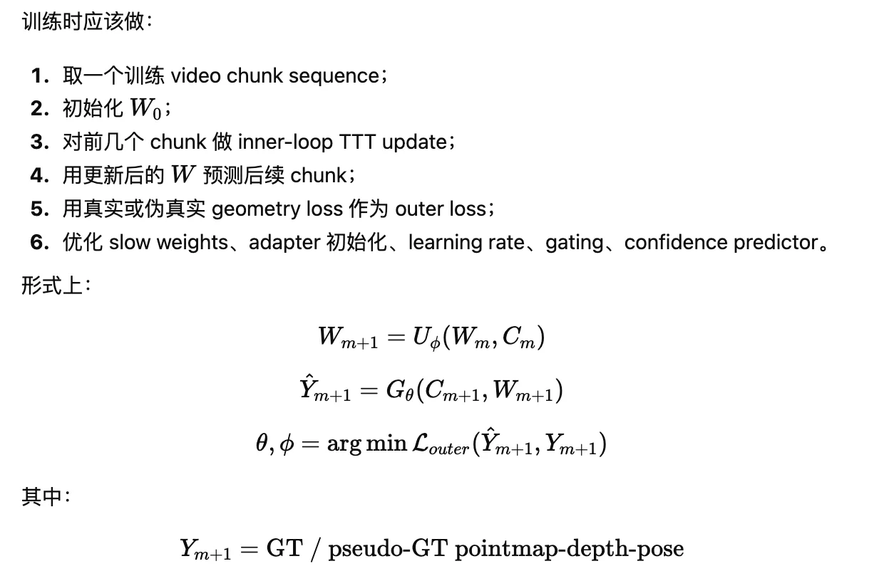
适合 streaming reconstruction 的 TTT 改进方案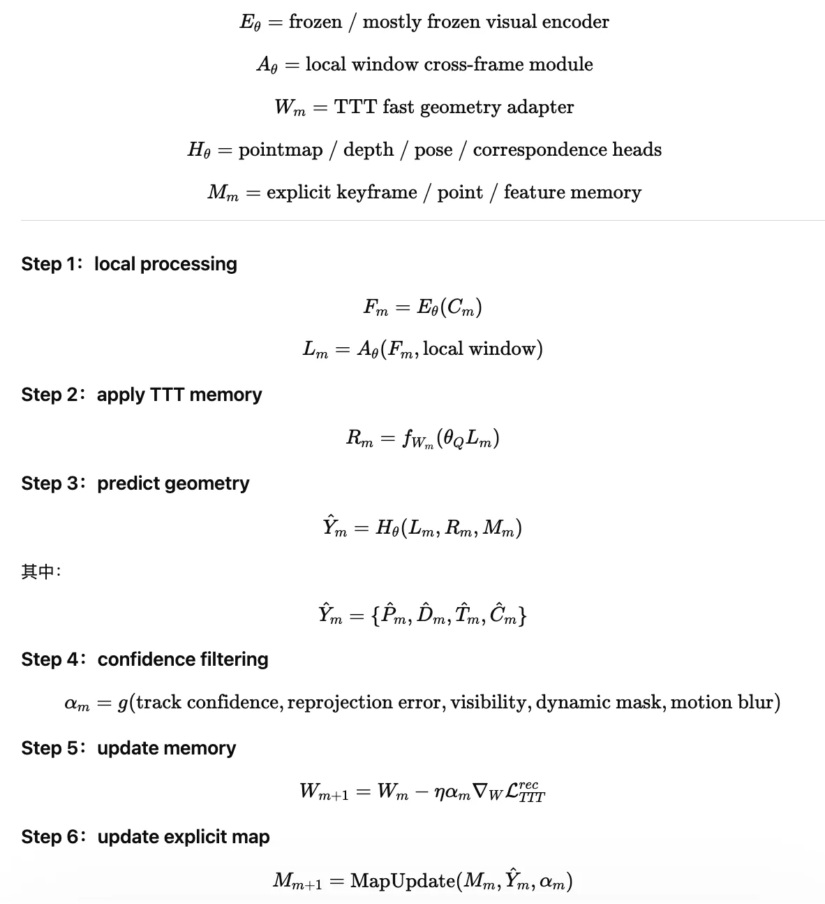
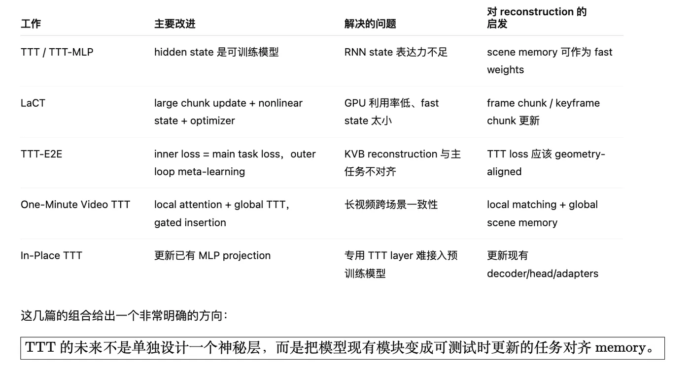
5. TTT + Streaming Reconstruction
TTT:
memory 容器：recurrent state / fast weights or ？
update 机制
- 更新方向：和主任务对齐的 loss 还是 TTT 自身的 任务？
- 更新方法：SGD / Muon / or ……
保留-遗忘机制
TTT3R 证明：recurrent state 可以被看作 test-time learned fast weights Titans [https://arxiv.org/pdf/2501.00663]：attention 短期记忆(精确匹配)，neural memory 长期记忆（压缩适配）；用 surprise 来决定 input 写入 memory 的程度，high surprise 优先写入长期记忆。
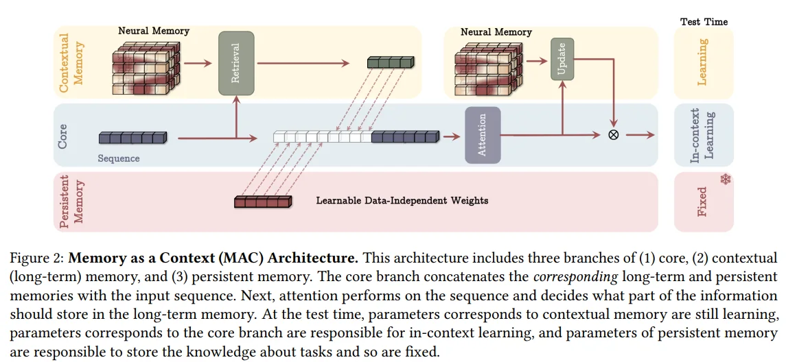
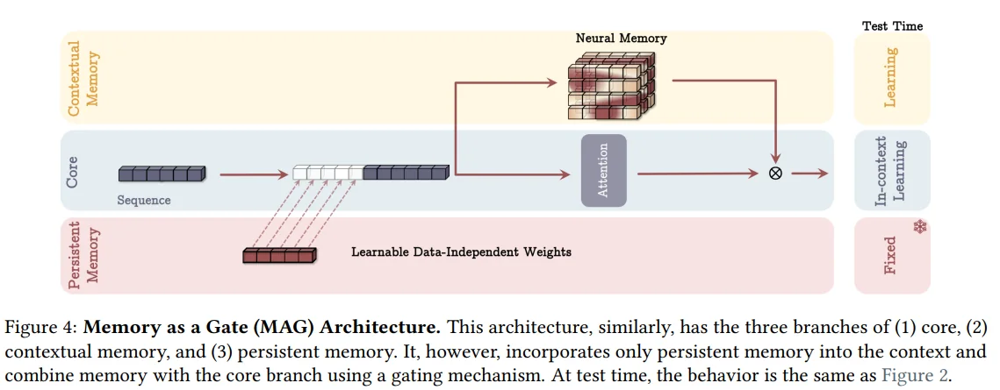
（在 streaming reconstruction 中应该是既考虑当前观测的可信度，还要考虑当前观测提供新几何有多少， update gate = 与历史记忆对齐程度 + 新视角/新区域的信息量 + outlier score）
MIRAS [https://arxiv.org/pdf/2504.13173]：TTT 不是一个固定的算法，而是一种记忆优化的设计
- memory architecture：记忆的组织形式：recurrent state / fast weights / MLP / neural memory 等等
- attentional bias：TTT loss 应该根据任务设置多元的 loss 和 正则，而不是大量使用 MSE
- retention gate： 决定旧memory 保留多少，新memory写入多少
- memory algorithm：update 的方式：SGD / Muon / 等等
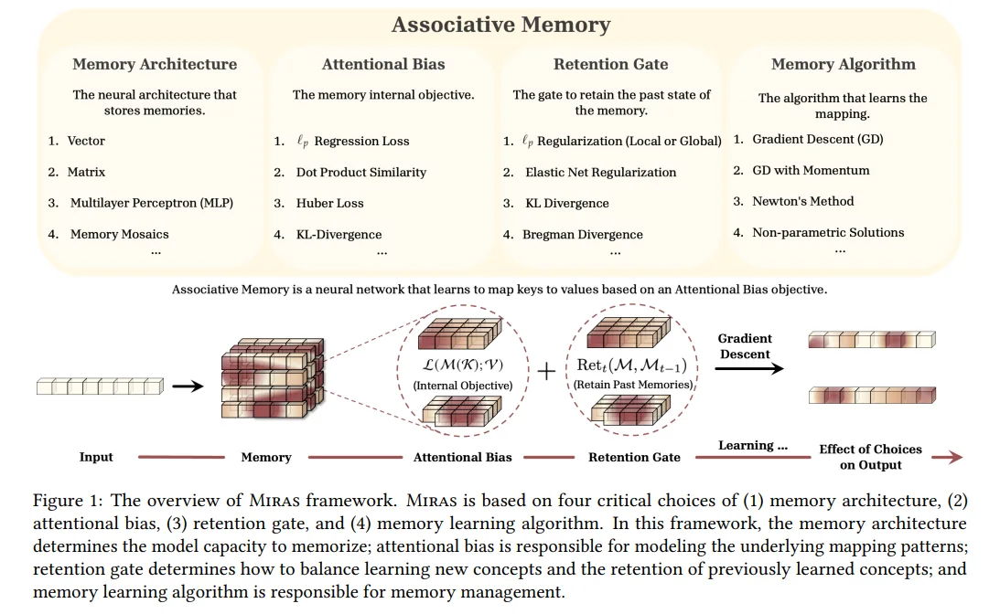
ATLAS [https://arxiv.org/pdf/2505.23735v1]: 高容量的 memory，用当前和过去的 tokens 一起更新memory，变得更加 online。
- memory update 应该基于上下文窗口而不是单个 token
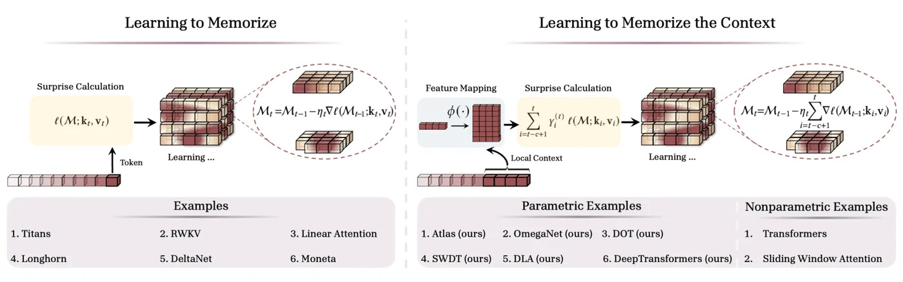
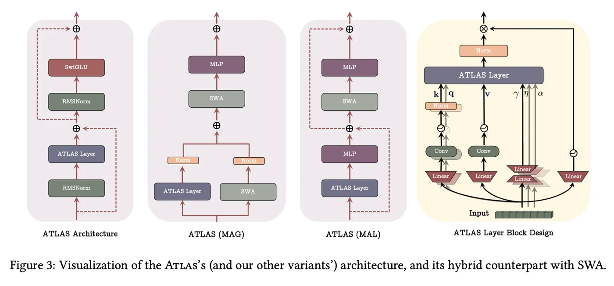
- 可不可以像 ATLAS 一样 把之前的图像token保留下，这个应该也是用不了多少内存，也可以逐渐压缩，这样可以一直访问之前的图像token，将之前信息与当前信息一起用在 memory 的更新中
- 可以把 TTT 的：历史 state 《--》当前 frame，修改成：历史 state 《--》当前帧和之前三帧组成的 frame window，这样可以减少单帧的歧义
Fast Spatial Memory [https://arxiv.org/pdf/2604.07350]：Elastic TTT，用 Fisher-weighted elastic prior 稳定 LaCT fast-weight updates，并维护一个 EMA anchor state
- 本质上是用一个 anchor 来稳定重要参数，让不太重要的参数快速适应与变动
- \(L_e = \sum_j F_{t,j}(W_{t,j}-A_{t,j})^2\) 然后 \(W_{t+1} = W_t - η∇_W(L_{geo} + L_e)\), \(A_{t+1} = \beta A_t + (1-\beta)W_{t+1}\) 就是要让 anchor 尽可能少动，对于快变的参数可以很快更新，其实说到底还是换了一种方法， 依旧是在维护长短期的记忆：长期的就是 anchor 不容易更新，短期的就是容易被更新的，依旧用 \(W_{t+1}\) 作为整个的状态。
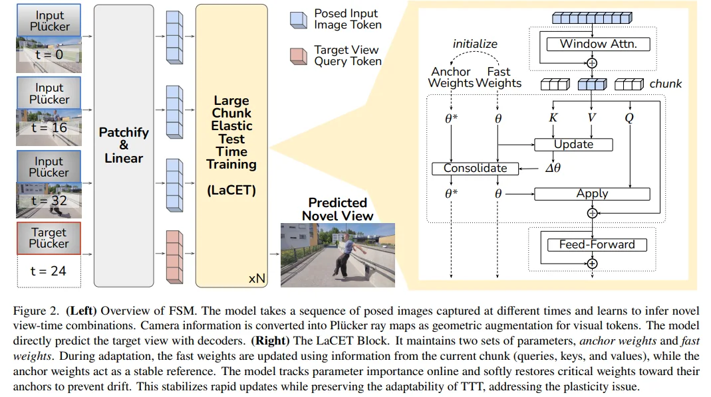
Questions：
- Q1： 为什么 \(v_t\) 就可以和 小模型的预测值 \(f_{W_{t-1}}(k_t)\) 做损失，并认为是 自监督任务的目标，作为损失来更新 fast weights.
- A： Outer loop 教会模型如何计算 \(v_t\) ，得到的 \(v_t\) 其实就是适合作为记忆的内容。
- Q2： TTT-linear 和 linear attention 的联系？TTT-MLP呢？
- A： linear attention 就是把 t 时刻的 T 次求和转化为增量更新一次累积矩阵 & 矩阵乘积一次。linear attention 把 t 时刻对所有历史 token 的显式求和，转化为：增量更新一次累积矩阵 & 与当前的 \(q_t\) 做一次矩阵乘。
将序列模型中的 hidden states 保存在其 Learner 中的权重中，通过更新 Learner 的权重以达到更新记忆的目的。
TTT（Test-Time Training，测试时训练） 里，模型处理当前序列时，不只是接受上下文信息，而是一边读，一边在线训练一个小模型；这个小模型的临时参数就是 hidden state / fast weights，训练它的过程叫 inner loop，而让整个机制在大量训练数据上学会如何在线学的过程叫 outer loop。
Hidden state 在常规的 RNN 中被看作是一个固定维度的向量，压缩“目前为止我看到了什么”，CUT3R 就这样。TTT 中，把 hidden state 认为是 learner 的内部存储，甚至它将不再是一个向量，而是一个小模型的参数集合，这比一个固定维度的 state 包含的信息多多了。Scal3R 就是这么干： 把 hidden state 看作推理时能够快速适配的参数，来累积上下文依赖。
Fast weights 是临时快速更新的神经网络权重（本质还是 hidden state，动态参数化的记忆，而不是 CUT3R 那样的固定维度的state）。不是计算快是适应上下文变化快，可以根据序列的变化快速改写参数。 最适合承载局部几何残差参数，而不是完整的几何参数本体。
Scal3R 就是将 fast weights 在 inner loop 中优化，捕捉上下文依赖。
如果落到 4DR 中 fast weights 可以用三类量表示：
- 局部静态几何残差，例如局部深度偏差、表面 patch 的隐变量；
- 局部时变几何参数，例如某些高斯或节点的短时轨迹修正；
- 局部可见性/遮挡相关参数，因为这些东西往往最依赖当前视角上下文。而通用特征提取器、相机—图像关联规则、长期时序先验，这些更像 outer loop 应该学稳的东西。
Inner loop 就是在线改写 fast weights 的过程，context 可以看作一个没有标签的数据集，那每次进来的 patch / token / chunk 都可以认为是一个新的数据，通过构造一个 self-supervised loss，只对 fast weights 求梯度并快速更新。
TTT 机制有两种梯度，一种梯度是在 inner loop 优化中针对 fast weights 的更新；一种是在 outer loop 中针对模型本身/整个骨干网络的全参数进行梯度下降与优化的。
slow weights 是正常训练的模型参数，负责把输入token 转成适合 TTT 更新的表示，定义 自监督任务，给 fast weights 初始化。
Outer loop 就可以看作是一个模型本身的泛化与大规模训练过程。这个过程教会了 inner loop 应该怎么初始化 fast weights，怎么自监督，怎么 inner loop。
outer loop 训练 larger network 的过程，在很多序列上优化大量的主干参数； inner loop 训练 TTT layer 的过程，在单条序列内部快速适配少量的快速权重；
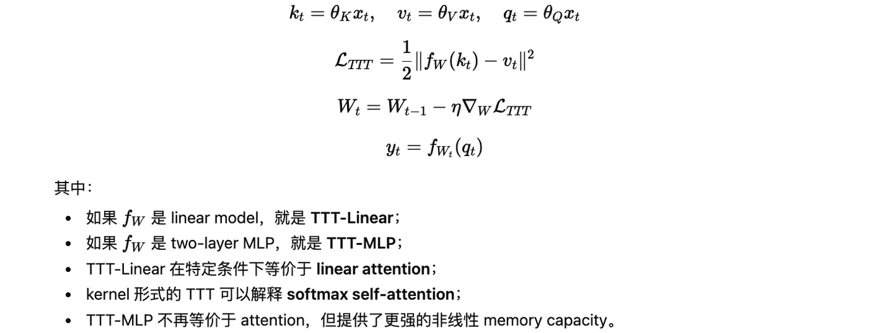
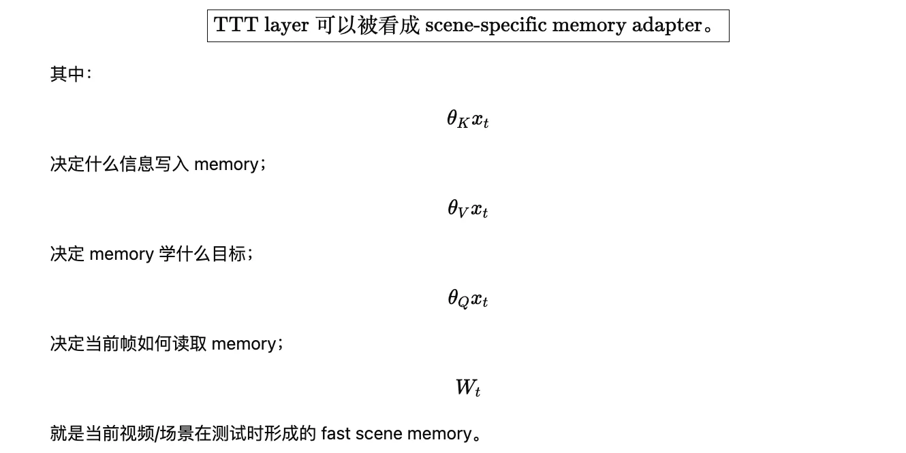